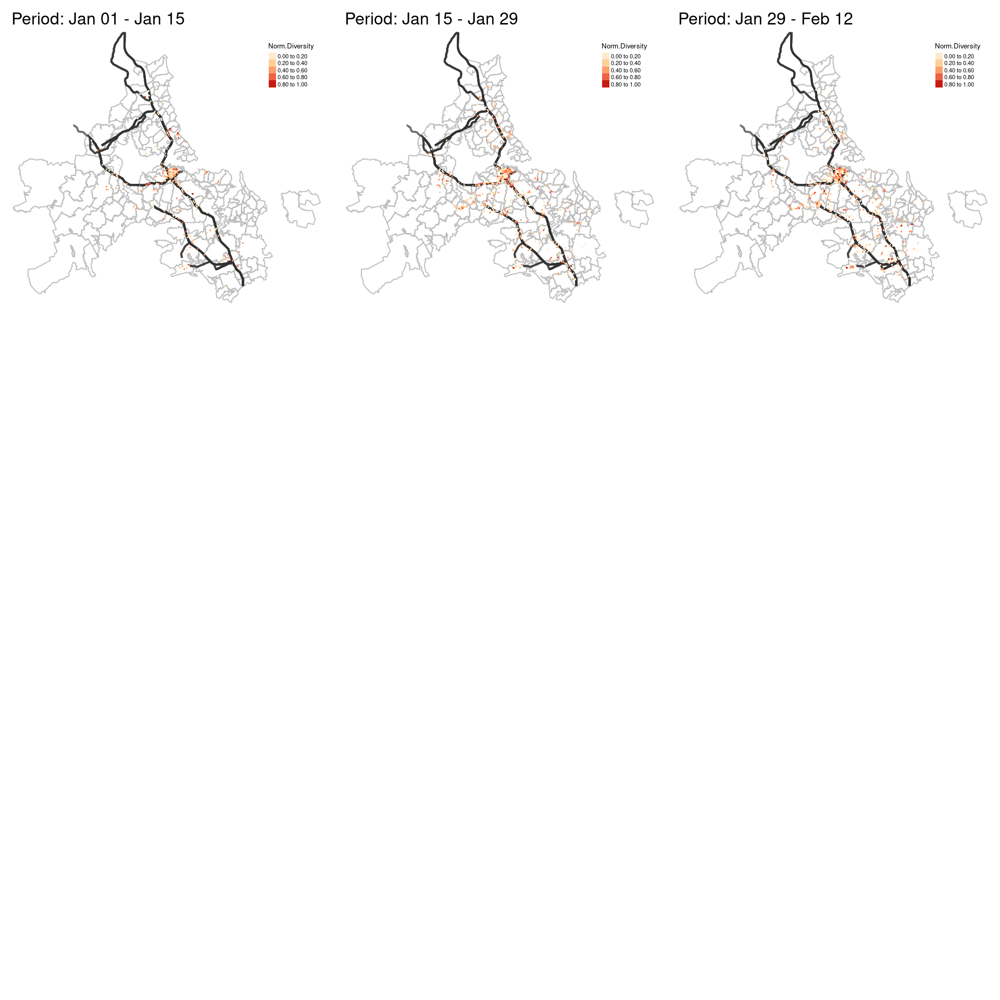
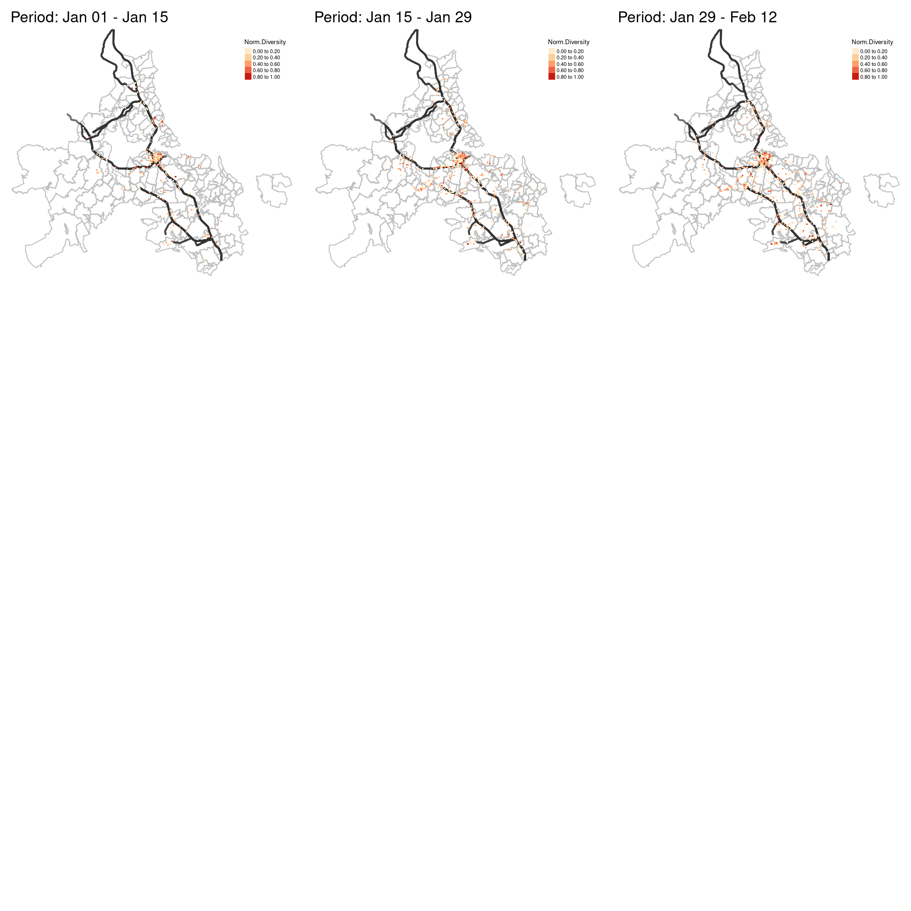

Social Diversity Analysis
Separate data with biweek interval
In order to compare the potential changes of diversity over time, the first step is to separate the data into multiple periods. I use a two-week interval and separate the data into 26 periods.
# create break points of every two weeks
biweekly_seqs <- seq(as.POSIXct("2020-01-01"), as.POSIXct("2020-12-31"), by = "2 weeks") %>%
as.Date()
# give each period a label, easier for subsequent analysis
prepare_labels <- function(index.start, index.end, weekly_seqs){
start_day <- weekly_seqs[index.start] %>% format(., "%b %d")
end_day <- weekly_seqs[index.end] %>% format(., "%b %d")
paste(start_day, "-", end_day)
}
biweek_labels <- map2_chr(seq(1, 26, 1), seq(2, 27, 1), function(x, y) prepare_labels(x, y, biweekly_seqs))
# separate biweek data and store them
get_biweekly_data <- function(df, biweek_labels, index.start, index.end){
output <- df %>%
mutate(date = as.Date(timestamp)) %>%
filter(date >= biweekly_seqs[index.start] & date < biweekly_seqs[index.end]) %>%
mutate(period = biweek_labels[index.start])
saveRDS(output, file = paste0(here("data/derived/biweekly-data/biweek_"), index.start, ".rds"))
}
## if function: if all biweekly data files exist, do not need to re-run the get_biweekly_data fun
if(length(list.files(here("data/derived/biweekly-data"), pattern = "*.rds")) != 26){
## parallel mapping
map2(seq(1, 26, 1), seq(2, 27, 1), function(x, y) get_biweekly_data(df, biweek_labels, x, y))
}
Construct spatial sectors
To operationalize diversity, one important step is to construct the spatial sectors. The dynamic sectors change along with grid cell locations is created based on different radius distance and directions [@chen_entangled_2021]. An example of spatial sectors of a grid cell is shown in Figure 2, where visitors visiting from the same sectors are considered as the same “species”. The concept of “species” will be used in the subsequent diversity analysis.
# step 1: get centers of grid cells
grid_centroids <- grids %>%
filter(grid_id %in% considered_grid_cells) %>%
st_centroid()
# step 2: create buffers for each grid cell
## buffer radius
radius <- c(1000, 3000, 5000, 7000, 10000, 20000, 30000, 60000)
## draw buffers
draw_buffers <- function(df_centroids, radius, grid_index){
grid_centroid <- df_centroids %>% filter(grid_id == grid_index)
buffers <- list()
for (i in 1:length(radius)){
if(i == 1){
buffers[[i]] <- grid_centroid %>%
st_buffer(., dist = radius[1]) %>%
mutate(radius = radius[1])
} else{
buffers[[i]] <- st_difference(
grid_centroid %>% st_buffer(., dist = radius[i]),
grid_centroid %>% st_buffer(., dist = radius[i-1])) %>%
dplyr::select(-grid_id.1) %>%
mutate(radius = radius[i])
}
}
do.call(rbind, buffers)
}
##!!!note: this step takes more than 1 hour, the processed data is stored in `data/derived/` folder, which can be directly loaded.
## process all grid cells
if(file.exists(here("data/derived/grid_buffers.rds"))){
grid_buffers <- readRDS(here("data/derived/grid_buffers.rds"))
}else{
# parallel mapping
grid_buffers <- map_df(grid_centroids$grid_id, function(x) draw_buffers(grid_centroids, radius, x))
saveRDS(grid_buffers, file = here("data/derived/grid_buffers.rds"))
}
# step 3: cut buffers to create spatial sectors
##cut single buffer
cut_buffer <- function(buffer, buffer_id, blades, grid_index){
lwgeom::st_split(st_geometry(buffer[buffer_id, ]), blades) %>%
st_collection_extract("POLYGON") %>%
st_sf() %>%
mutate(grid_id = grid_index) %>%
dplyr::select(grid_id)
}
get_cut_buffer <- function(df_centroids, df_buffers, shift, grid_index, crs = 2193){
# get input grid centroid
centroid <- df_centroids %>%
filter(grid_id == grid_index) %>%
st_coordinates() %>%
as_tibble() %>%
set_names(c("lon", "lat")) # convert geometry to lon and lat
# create blades
blades <- st_linestring(
rbind(c(centroid$lon+shift, centroid$lat),
c(centroid$lon-shift, centroid$lat),
c(centroid$lon, centroid$lat),
c(centroid$lon, centroid$lat+shift),
c(centroid$lon, centroid$lat-shift))) %>%
st_sfc(., crs = crs)
# get buffer for input grid
buffer <- df_buffers %>% filter(grid_id == grid_index)
buffer1 <- buffer[1, ] %>% dplyr::select(grid_id)
buffer <- buffer[-1, ] ## do not cut the first inner buffer
buffer_ids <- 1:nrow(buffer)
## embed function within another function
rbind(buffer1, do.call(rbind, map(buffer_ids, function(x) cut_buffer(buffer, x, blades, grid_index)))) %>%
rowid_to_column(var = "sector_id")
}
# process all grid cells
if(file.exists(here::here("data/derived/grid_sectors.rds"))){
grid_sectors <- readRDS(here::here("data/derived/grid_sectors.rds"))
}else{
# parallel mapping
grid_sectors <- map_df(grid_centroids$grid_id, function(x) get_cut_buffer(grid_centroids, grid_buffers, shift = 60000, x))
saveRDS(grid_sectors, file = here::here("data/derived/grid_sectors.rds"))
}
grid_sectors_example <- grid_sectors %>%
filter(grid_id == 15955) %>%
mutate(sector_id = factor(sector_id))
sectors_showcase <- grid_sectors_example %>%
st_intersection(grids, .) %>%
group_by(sector_id) %>%
summarise()
p_sector_showcase <- tm_shape(grids) +
tm_polygons(col = "white", alpha = 0.1, border.col = "grey") +
tm_shape(sectors_showcase) +
tm_polygons(col = "sector_id", border.col = "purple", alpha = 0.9) +
tm_shape(grids %>% filter(grid_id == 15955)) +
tm_polygons(col = "red") + ## target grid
tm_shape(grid_sectors_example) +
tm_borders(col = "purple", lty = 2) +
tm_text(text = "sector_id", size = 0.6, col = "black") +
tm_layout(legend.show = FALSE)
tmap_save(p_sector_showcase, here("img/p_sector_showcase.png"))
Analyze diversity
After constructing spatial sectors for each grid cell, I apply the concept of biological diversity from ecology [@tramer_bird_1969; @maignan_bio-ecological_2003] and use Shannon’s index (\(H\)) to measure the diversity. The Shannon’s index is calculated as:
\[H = -\sum_{i = 1}^{S}p_ilnp_i\]
where \(p_i\) is the proportion of users that allied to “species” \(i\) (i.e., sectors in this study) and \(S\) is the frequency of “species”.
## compute users in each visited grid
get_visitors_in_visited_grid <- function(users_in_grids, grid_index, grids, identified_hms){
users <- users_in_grids %>% filter(grid_id == grid_index)
users %>%
left_join(., identified_hms) %>%
na.omit() %>%
rename(visited_grid = grid_id) %>%
filter(home != grid_index) %>% ##remove locals
left_join(., grids, by = c("home" = "grid_id")) %>%
rename(home_geometry = geometry) %>%
st_as_sf(crs = 2193)
}
cal_diversity <- function(visitors_in_visited_grids, grid_sectors, sf_akl, grids, list_grids, index){
##visitors in the visited grid
visitors_in_visited_grid <- visitors_in_visited_grids[[index]]
if(nrow(visitors_in_visited_grid) == 0){
output <- tibble()
}else{
## visited grid id
visited_grid <- unique(visitors_in_visited_grid$visited_grid)
if(visited_grid %in% list_grids){
## remove locals
visitors_in_visited_grid <- visitors_in_visited_grid %>%
filter(home != visited_grid)
## sectors of the visited grid
visited_grid_cutted_buffers <- grid_sectors %>% filter(grid_id == visited_grid)
## sectors within auckland
ack_buffer_regions <- st_join(visited_grid_cutted_buffers, sf_akl) %>%
na.omit() %>%
dplyr::select(-id, -city_name) %>%
unique()
## get visitors in each regions and remove the duplicates
df_joined <- st_join(ack_buffer_regions, visitors_in_visited_grid) %>% na.omit()
df_joined_drop_duplicates <- df_joined[!duplicated(df_joined$u_id), ]
output <- df_joined_drop_duplicates %>%
group_by(sector_id) %>%
dplyr::summarise(n_user = n_distinct(u_id)) %>%
ungroup() %>%
mutate(area_km_square = as.numeric(st_area(.)/1000000)) %>%
mutate(user_density_per_km = n_user/area_km_square) %>%
st_set_geometry(NULL) %>%
distinct(sector_id, user_density_per_km) %>%
spread(sector_id, user_density_per_km) %>%
diversity(index = "shannon") %>%
tibble::enframe(name = NULL) %>%
mutate(visited_grid = visited_grid) %>%
dplyr::select(visited_grid, value) %>%
dplyr::rename(div = value)
}else{
output <- tibble()
}
}
return(output)
}
# calculate diversity
cal_diversity_biweek <- function(file.nm, label.date_range){
# get file path
file_to_read <- paste0(here("data/derived/biweekly-data/"), file.nm, ".rds")
# read biweekly data
df <- readRDS(file_to_read)
# grids with data records
grid_ids <- df$grid_id %>% unique()
# distinct users in each grid
users_in_grids <- df %>% distinct(u_id, grid_id)
# filter visitors in each grid cell, i.e., users whose home locations are not the same as the visited grid cells
message("Start aggregating visitors...")
visitors_in_visited_grids <- map(grid_ids, function(x) get_visitors_in_visited_grid(users_in_grids, x, grids, identified_hms))
message("Finish aggregating visitors!")
# filter grid with at least 2 visitors
list_grids <- do.call(bind_rows, visitors_in_visited_grids) %>%
st_set_geometry(NULL) %>%
group_by(visited_grid) %>%
summarise(n = n_distinct(u_id)) %>%
filter(n >= 2) %>% # filter grid with at least 2 visitors
pull(visited_grid)
# measure diversity
message("Start calculating diveristy...")
diversity_shannon <- do.call(rbind, map(1:length(visitors_in_visited_grids), function(x) cal_diversity(visitors_in_visited_grids, grid_sectors, sf_akl, grids, list_grids, x)))
# modify the diversity (normalize)
diversity_shannon <- diversity_shannon %>%
left_join(., grids, by = c("visited_grid" = "grid_id")) %>%
st_as_sf() %>%
st_transform(crs = 2193) %>%
mutate(norm_div = (div - min(div))/(max(div) - min(div)),
norm_div = round(norm_div, 2),
date_range = label.date_range) %>%
dplyr::select(visited_grid, div, norm_div, date_range)
message("Finish calculating diversity!")
# save the result
saveRDS(diversity_shannon, file = paste0(here("data/derived/biweekly-diversity/"), "div_", file.nm, ".rds"))
}
files <- paste0("biweek_", seq(1, 26, 1))
##!!note: this process takes around 5 hrs, the computed results are stored under `data/derived/biweekly-diversity` folder
map2(files, biweek_labels, purrrogress::with_progress(function(x, y) cal_diversity_biweek(file.nm = x, label.date_range = y)))
# load computed diversity
file_pathes <- paste0(here::here("data/derived/biweekly-diversity/"), "div_biweek_", seq(1, 26, 1), ".rds")
df_divs <- map(file_pathes, function(x) readRDS(x))
df_divs[[1]] %>% head()
## Simple feature collection with 6 features and 4 fields
## Geometry type: MULTIPOLYGON
## Dimension: XY
## Bounding box: xmin: 1755917 ymin: 5905575 xmax: 1769417 ymax: 5935279
## Projected CRS: NZGD2000 / New Zealand Transverse Mercator 2000
## # A tibble: 6 × 5
## visited_grid div norm_div date_range geometry
## <int> <dbl> <dbl> <chr> <MULTIPOLYGON [m]>
## 1 17820 0.0701 0.06 Jan 01 - Jan 15 (((1759517 5905575, 1759367 5905…
## 2 15898 0.0111 0.01 Jan 01 - Jan 15 (((1756067 5934933, 1756043 5934…
## 3 16387 0.308 0.25 Jan 01 - Jan 15 (((1756967 5920903, 1756828 5920…
## 4 23410 0.500 0.41 Jan 01 - Jan 15 (((1769267 5905835, 1769117 5905…
## 5 16979 0.637 0.53 Jan 01 - Jan 15 (((1758017 5915447, 1757867 5915…
## 6 16645 0.961 0.79 Jan 01 - Jan 15 (((1757417 5920644, 1757267 5920…
spatial_viz <- function(df_div, main.title_size = 1, legend.title_size = 0.5,
legend.text_size = 0.35, legend_width = 0.5){
range_biweek <- df_div$date_range %>% unique()
tm_shape(sf_akl) +
tm_borders(col = "grey") +
tm_shape(highway_centrlines) +
tm_lines(col = "grey20", lwd = 2, alpha = 0.7) +
tm_shape(df_div) +
tm_fill("norm_div",
palette = "OrRd",
style = "fixed",
breaks = c(0, 0.2, 0.4, 0.6, 0.8, 1.0),
legend.is.portrait = T,
legend.format = list(digits = 2),
title = "Norm.Diversity") +
tm_layout(main.title = paste0("Period: ", range_biweek),
main.title.size = main.title_size,
frame = FALSE,
legend.frame = F,
legend.bg.color = "white",
legend.title.size = legend.title_size,
legend.text.size = legend.text_size,
legend.width = legend_width,
legend.position = c("right", "top"))
}
pics_div <- map(df_divs, function(x) spatial_viz(x))
p_map1to9 <- tmap_arrange(pics_div[1:3], nrow = 3, ncol = 3)
p_map1to9


3 Social Diversity Analysis
3.1 Separate data with biweek interval
In order to compare the potential changes of diversity over time, the first step is to separate the data into multiple periods. I use a two-week interval and separate the data into 26 periods.
3.2 Construct spatial sectors
To operationalize diversity, one important step is to construct the spatial sectors. The dynamic sectors change along with grid cell locations is created based on different radius distance and directions [@chen_entangled_2021]. An example of spatial sectors of a grid cell is shown in Figure 2, where visitors visiting from the same sectors are considered as the same “species”. The concept of “species” will be used in the subsequent diversity analysis.
Figure 2. An example of spatial sectors of a grid cell.
3.3 Analyze diversity
After constructing spatial sectors for each grid cell, I apply the concept of biological diversity from ecology [@tramer_bird_1969; @maignan_bio-ecological_2003] and use Shannon’s index (\(H\)) to measure the diversity. The Shannon’s index is calculated as:
\[H = -\sum_{i = 1}^{S}p_ilnp_i\]
where \(p_i\) is the proportion of users that allied to “species” \(i\) (i.e., sectors in this study) and \(S\) is the frequency of “species”.
